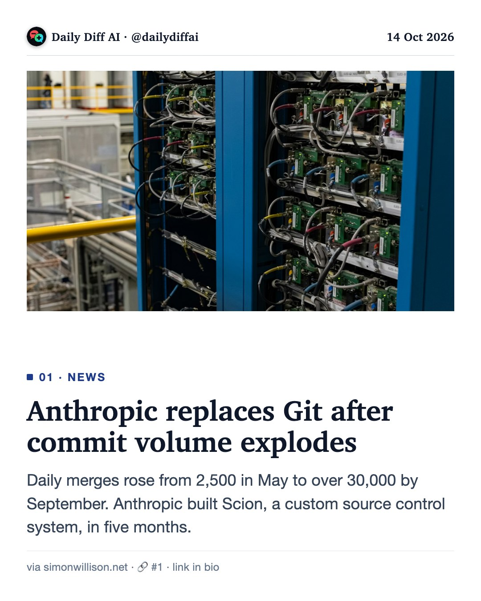
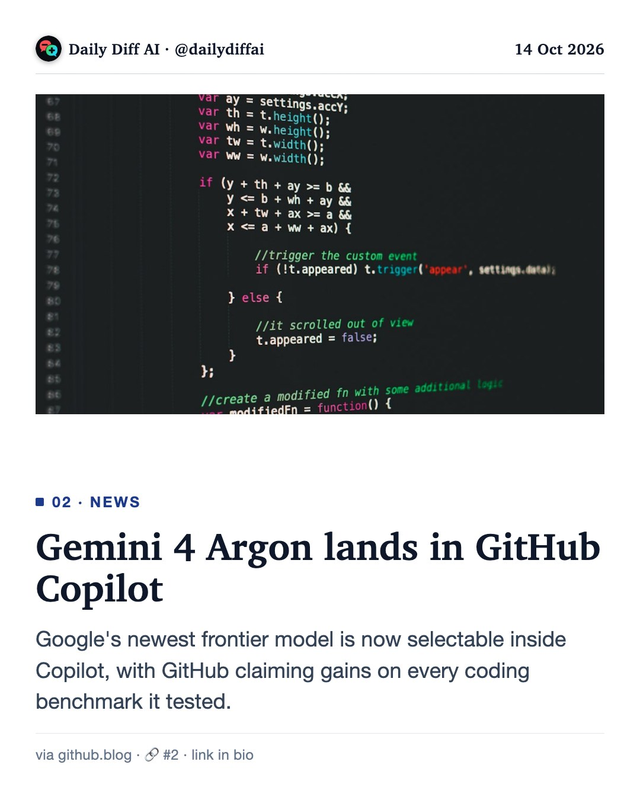
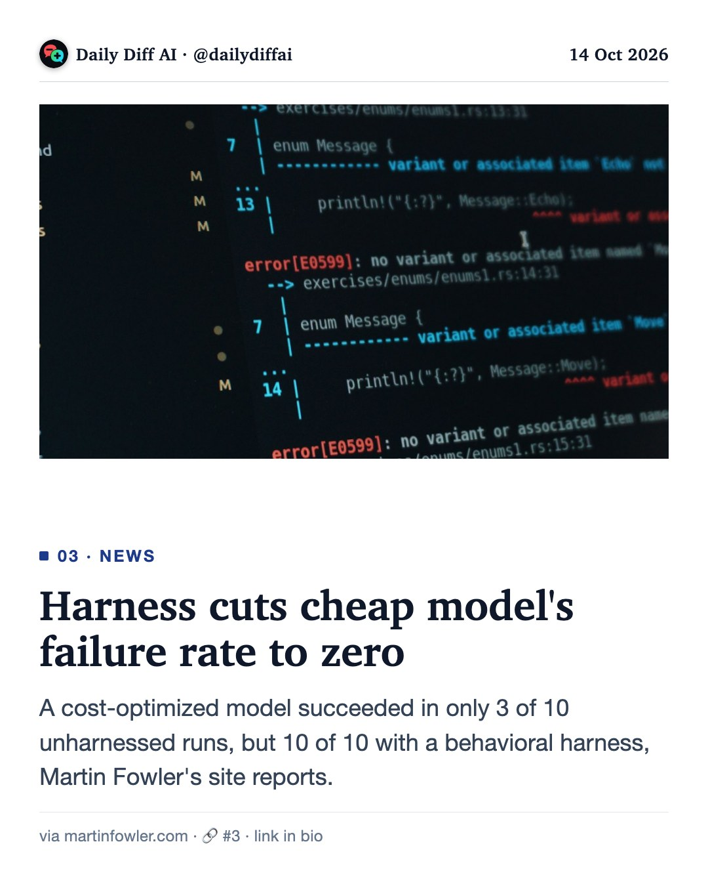
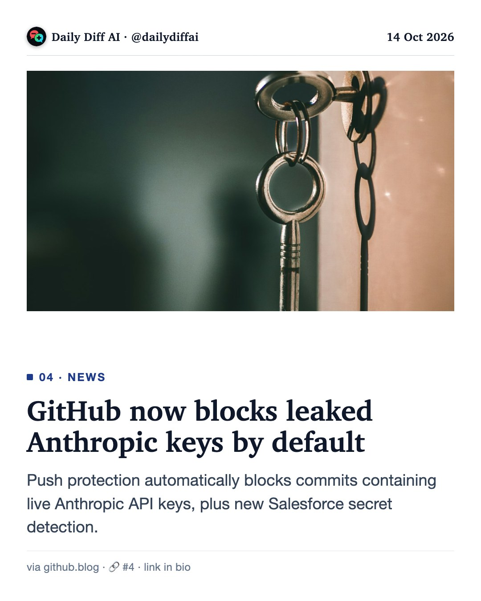
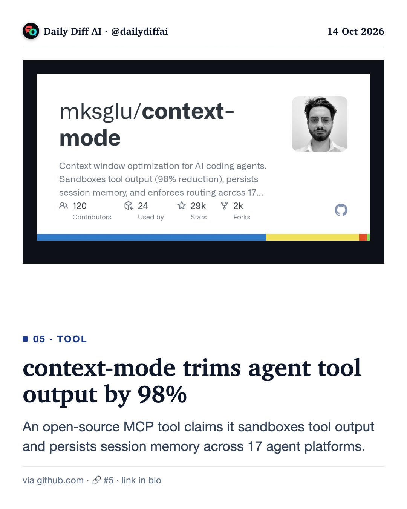
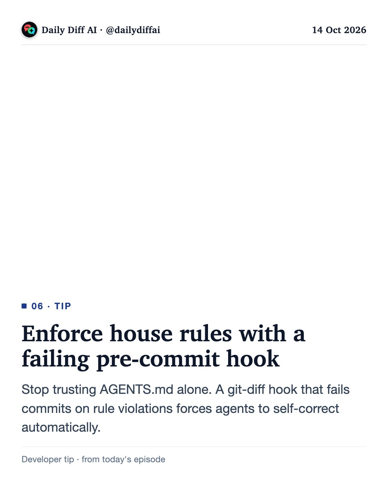

Daily Diff AI

Anthropic replaces Git after commit volume explodes
Daily merges rose from 2,500 in May to over 30,000 by September. Anthropic built Scion, a custom source control system, in five months.
Read on simonwillison.net →
Gemini 4 Argon lands in GitHub Copilot
Google's newest frontier model is now selectable inside Copilot, with GitHub claiming gains on every coding benchmark it tested.
Read on github.blog →
Harness cuts cheap model's failure rate to zero
A cost-optimized model succeeded in only 3 of 10 unharnessed runs, but 10 of 10 with a behavioral harness, Martin Fowler's site reports.
Read on martinfowler.com →
GitHub now blocks leaked Anthropic keys by default
Push protection automatically blocks commits containing live Anthropic API keys, plus new Salesforce secret detection.
Read on github.blog →
context-mode trims agent tool output by 98%
An open-source MCP tool claims it sandboxes tool output and persists session memory across 17 agent platforms.
Read on github.com →
Enforce house rules with a failing pre-commit hook
Stop trusting AGENTS.md alone. A git-diff hook that fails commits on rule violations forces agents to self-correct automatically.